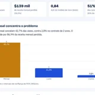
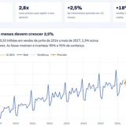
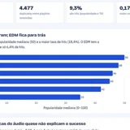

Anderson Bispo
Engenheiro de Dados Sênior e Cientista de Dados. Crio produtos com dados e IA.
Portfólio de Dados 📊 1 Minuto de Tecnologia 🎬 Automação com IA 🤖 Currículo Lattes 🎓Produtos e negócios
NeuroKids
App que reduz a carga cognitiva dos terapeutas ao documentar sessões de acomodação sensorial e acompanhar a evolução do paciente.
Co-Founder | CTOProspector
Prospecção B2B automatizada: captação, enriquecimento, score de leads e disparo, entregando ao cliente só quem respondeu.
Serviço oBispoAutomação com IA
Chatbots de WhatsApp e automações com IA para pequenas e médias empresas atenderem e venderem mais.
Serviço oBispoBot de Suporte com RAG
O motor dos chatbots: responde pelos documentos da loja citando a fonte, passa para um humano quando não tem certeza e conversa pelo WhatsApp. Avaliado automaticamente com 46 casos.
Código abertoJarvis
Assistente de voz pessoal em pt-BR: digo "Hey Jarvis" e ele abre apps, cria lembretes, mexe na agenda e organiza minhas notas.
Código abertooConcurseiro
Portal que reúne os concursos abertos e previstos do Brasil inteiro, com busca por estado, vagas e salário.
Atualizado 3x ao diaCases de dados

Telco Churn
Diagnóstico de cancelamento de clientes de telecom, com modelo preditivo e dashboard interativo.

Previsão de Vendas
Previsão de vendas no varejo com séries temporais e pipeline reprodutível.

Spotify Analytics
O que torna uma música popular? Análise das características das faixas do Spotify.
Pipeline ELT
Pipeline completo com Docker, Airflow e dbt: ingestão para Postgres, transformação, testes de qualidade e dashboard.
Publicações científicas
TEAChat
Promovendo o Suporte Educacional ao Autismo com Inteligência Artificial Conversacional. Assistente com RAG e LLMs que adapta as respostas ao perfil de educadores e famílias.
WEI 2025 · Autor principalDetecção de DDoS com XAI
Aprendizado de Máquina Aplicado à Detecção de Ataques DDoS com Abordagens de Inteligência Artificial Explicável (XAI).
Latinoware 2025 · Latin.Science · CoautorAvaliação de LLMs em apoio à decisão clínica
Métrica de rastreabilidade das recomendações geradas por LLMs.
Em avaliação · Autor principalCurrículo Lattes
Formação, produção acadêmica e trajetória completa na Plataforma Lattes (CNPq).
CNPq